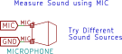
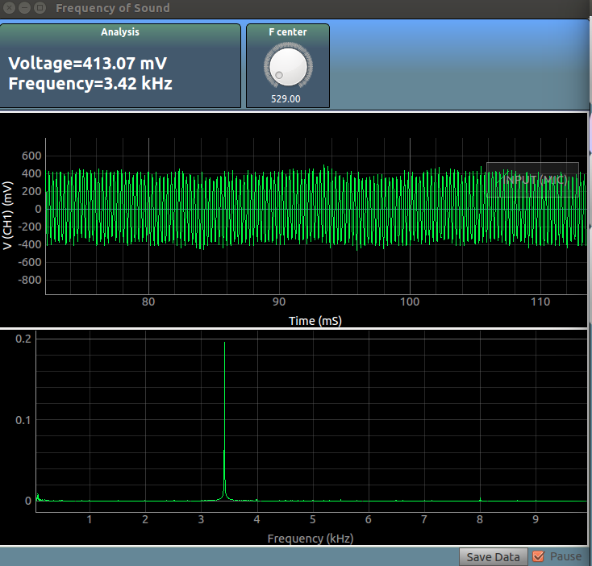

Sound Basics
Record sound using the microphone, and study frequencies

In this experiment, the signals recorded by the microphone will be plotted as a function of time in the first graph. If a fixed frequency sound, such as a whistle, or a plucked string is recorded, its frequency will be mathematically extracted, and shown at the top
The second plot shows a fourier transform of the recorded data. The X-Axis of the graph is frequency, and the Y-Axis displays the amplitude of sound corresponding to that frequency.
Try Mixing different frequencies (Two people can whistle together) , and see how the original whistles can be extracted from the mixed input signal.
